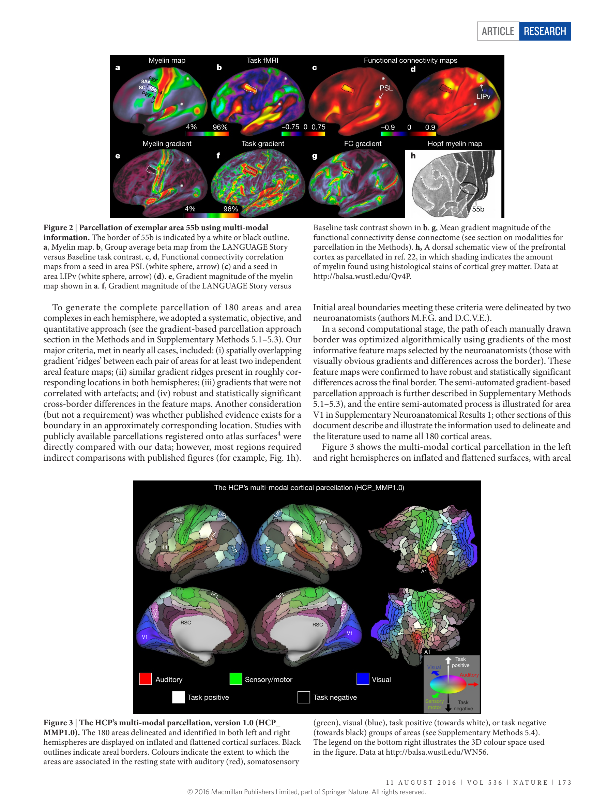

fig03_HCP_parcellation_source — group_atlas
Inflated/3D surface projections are not area-preserving flatmaps. Measure original HCP native or midthickness surfaces with matching labels, not the rendered page.


No field ROI — Calibrated TIFF
| Field | mm² | % neocortex | Status |
|---|---|---|---|
| M1 | NA | NA | not_measurable |
| S1_3a | NA | NA | not_measurable |
| S1_3b | NA | NA | not_measurable |
| S1_area1 | NA | NA | not_measurable |
| S1_area2 | NA | NA | not_measurable |
| S1_face | NA | NA | not_measurable |
| V1 | NA | NA | not_measurable |
| A1 | NA | NA | not_measurable |
| whole_neocortex | NA | NA | not_measurable |